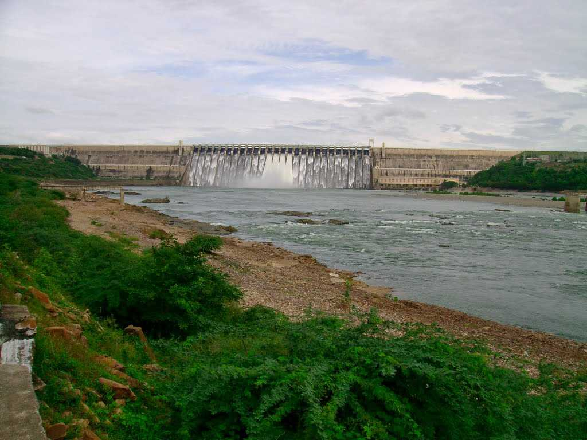
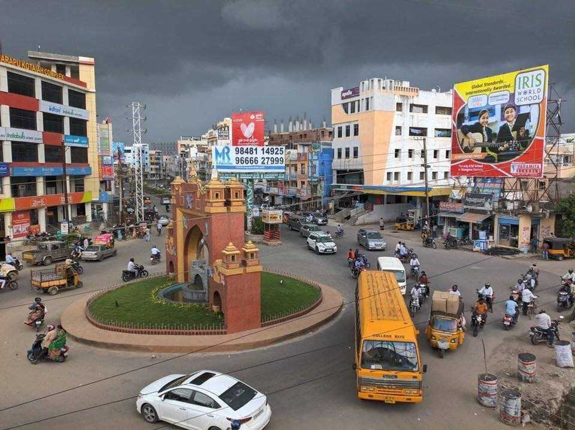
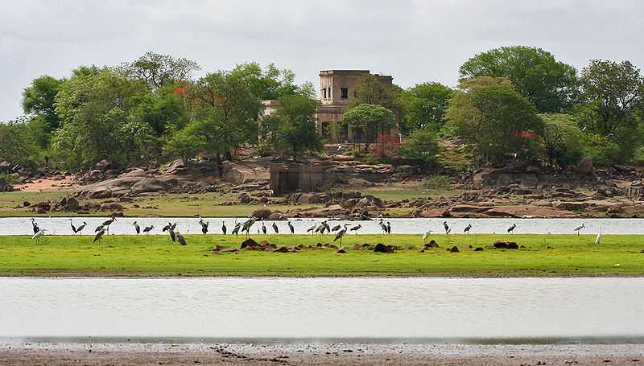

The site of Somnath has been a pilgrimage site from ancient times on account of being a Triveni Sangam: the confluence of three rivers namely Kapila, Hiran and Saraswati. The Gurjara-Pratihara king Nagabhata II recorded that he has visited tirthas in Saurashtra, including Someshvara, an alternative name for the temple.
Papikondalu mountain range runs along the River Godavari (Western Godavari) and is located in Rajahmundry, Andhra Pradesh. Papikondalu is a sheer fest to the eyes in terms of its scenic beauty. As the hills become closer and closer to the visitor, the width of the mighty Godavari becomes narrower. I

Nagarjunsagar, formerly known as Vijayapuri, is a prominent tourist destination known for its massive Nagarjunasagar Dam, one of the largest masonry dams in the world. The dam is located between Nalgonda district in Telangana and Guntur district in Andhra Pradesh. Built across the Krishna River, the dam stands as a significant feat of engineering, providing irrigation and hydroelectric power to the region.
Chilkur Balaji Temple is situated in the picturesque village of Chilkur, about 30 kilometres away from Hyderabad. It is also called the VISA Temple, and sits prettily on the banks of the Osman Sagar Lake, near the Vikarabad Road.
Nalgonda is a city in Telangana, with deep-rooted rich history and equally intriguing cultural heritage. With its roots going back to Paleolithic Age proved by enough evidence excavated from Yeleswaram, Nalgonda also displays the hints of Neolithic culture with the further unearthing of sling stones and other such objects.
Situated on the banks of the Godavari river, Koti Lingala is a popular Hindu pilgrimage site in the Jagtial district of Telangana. Nestled in the lap of nature, amidst hills and lush greenery, it is considered one of the 16 great janapadas of the country's ancient heritage.
Built in the Gothic Revival style, Medak Cathedral is one of the most gorgeous and striking churches in India. It is believed that the mosaic tiles of six different colours used in the construction of the church were imported from Britain.
Located in the Jubilee Hills area of Hyderabad, KBR National Park, or Kasu Brahmananda Reddy Park, also known as Chiran Fort Palace is a world-famous national park. Boasting of picturesque beauty and a wide variety of flora, fauna and avifauna.

The Amrabad Tiger Reserve is located in the Nagarkurnool and Nalgonda districts in the southern part of Telangana. Spread over 2611.4 square kilometers, it is one of the largest tiger reserves in India. Built in 1987, this establishment was declared as a Project Tiger Reserve in 1993.

Karimnagar is a flourishing city in the Indian state of Telangana, located at a distance of 164 km from the state’s capital, Hyderabad. It boasts of noteworthy architecture and vibrant history. The city has a remarkable influence of the Telugu as well as Persian cultures.

Nizamabad is a district located in the North-Western region of Telangana. It is a major urban suburb which is the third-largest city in the state of Telangana. Previously part of Andhra Pradesh, Nizamabad was declared the district headquarters that's governed by the municipal corporation after the reorganization act of 2014.

Sprawling over a vast area of almost 635 sq. kms, Kinnersani Wildlife Sanctuary is situated in the Khammam district of Telangana. Nestled amidst the Dandakaranya Forest, the sanctuary is flanked by river Godavari on one side.